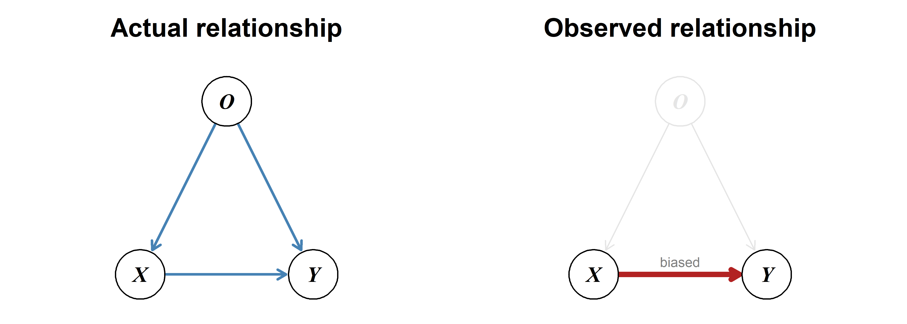
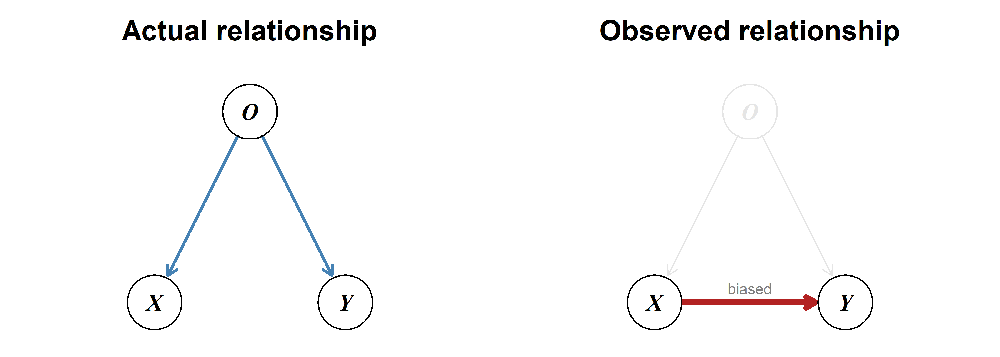
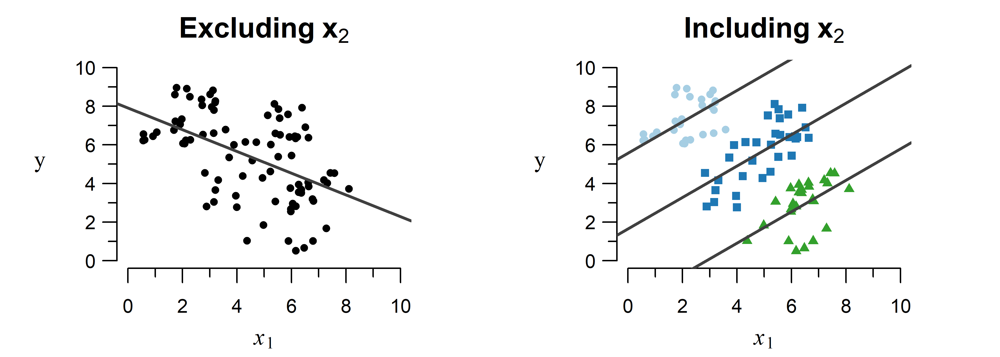

3 Multiple Linear Regression
Linear regression with any number of explanatory variables.
Multiple linear regression allows you to simultaneously take into account the effect of multiple explanatory variables.
Why not just several one-on-one analyses?
One-on-one measures of association, like a correlation coefficient, are easy to compute and hence often used to explore relationships. However, these fail to reflect the complexity of real-life phenomena. Cancer is not caused by a single mutation; speciation not triggered by a single trait change.
Attempting to understand a complex system by inspecting one-on-one relationships between variables is called correlation analysis. Correlation analysis has been criticized in many biological fields, including clinical science [1]–[3], ecology [4] and evolutionary biology [5]. Key phenomena invalidating one-on-one analyses are explained below.
Estimating the effect of one variable without accounting for the effect of others can lead to a biased result.
Example
A special case of omitted-variable bias—a confounder can create the illusion of a relationship where none exists.

Example
Coffee consumption is often linked to lung cancer, but this is caused by the confounding variable smoking: On average, smokers drink more coffee and are much more likely to develop lung cancer. Large overarching meta-analyses adjusting for smoking typically show that coffee consumption is not a risk factor for lung cancer [9]–[11].
Trends can appear, disappear and even completely change direction when including another variable in the model.

Example
A study on kidney stones compared two methods for removal: open surgery and percutaneous nephrolithotomy (PN) [12]. Surprisingly, the less invasive PN method displayed a higher success rate than open surgery.
As shown in Table 3.1, this is an example of Simpson’s paradox: Separating by kidney stone size reveals that open surgery outperforms PN for both situations individually, but not when comparing the totals.
| Size | Open Surgery | Percutaneous Nephrolithotomy |
|---|---|---|
| \(< 2\) cm | \(\frac{81}{87}\) (93.1%) | \(\frac{234}{270}\) (86.7%) |
| \(\geq 2\) cm | \(\frac{192}{263}\) (73.0%) | \(\frac{55}{80}\) (68.8%) |
| total | \(\frac{273}{350}\) (78.0%) | \(\frac{289}{350}\) (82.6%) |
How is this contradiction possible? Open surgery is used in more often in severe cases (i.e., larger stones), which have a lower success rate. This lowers the total success rate below that of PN. Failing to account for this second variable (size) leads to the wrong conclusion that open surgery performs worse.
Contrary to one-on-one analyses, multiple regression can simultaneously take into account the effect of multiple contributing factors. This allows you to see what the effect of one variable is given the effect of all other included variables, which avoids the phenomena described above.